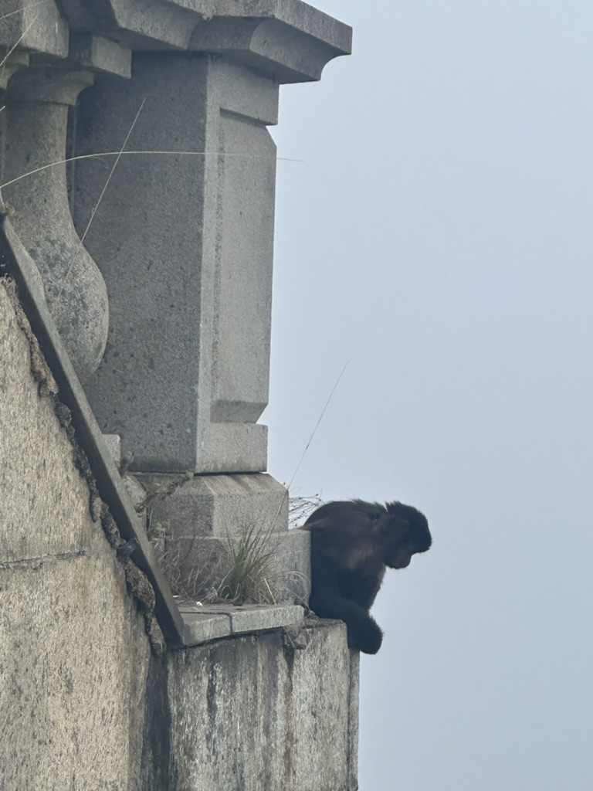
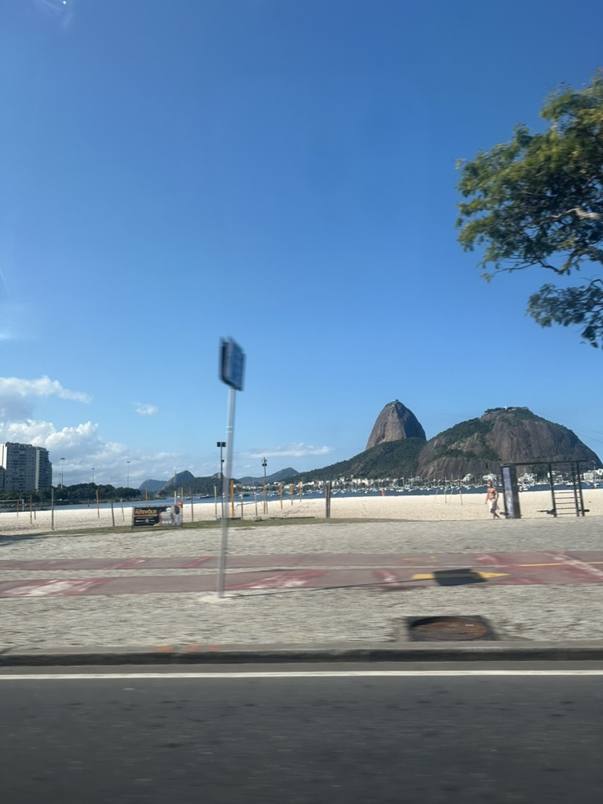
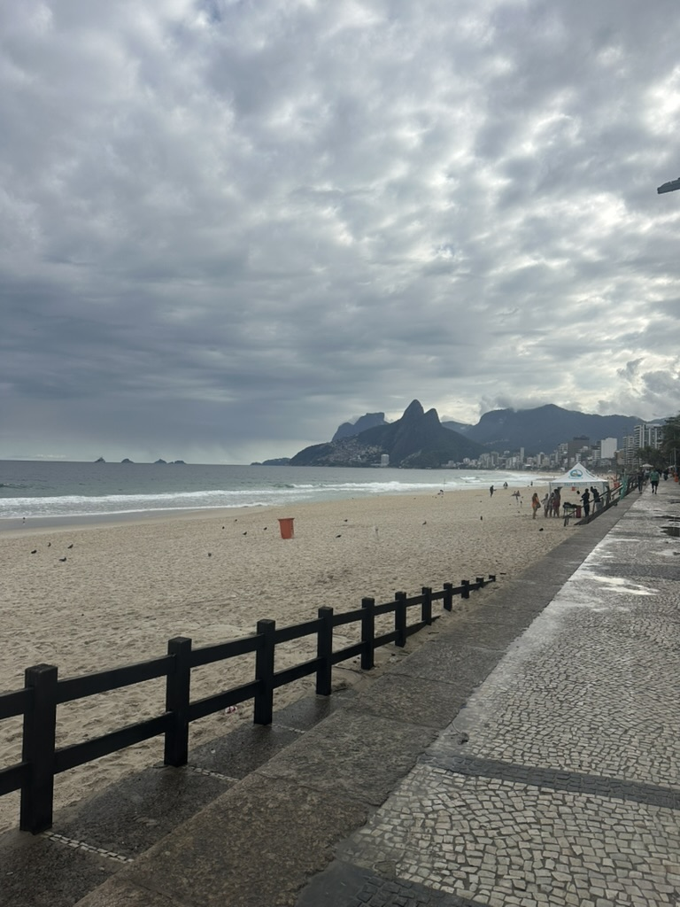
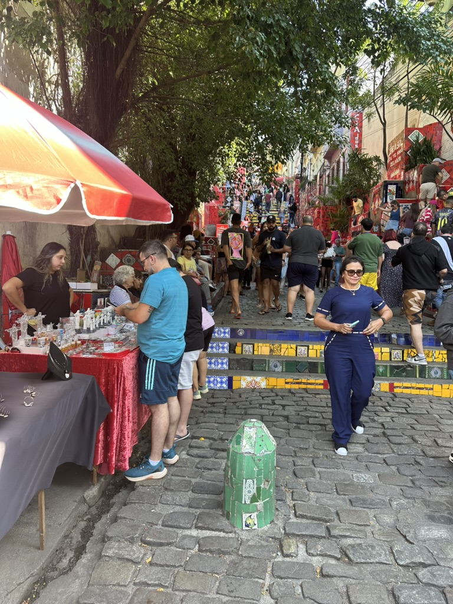
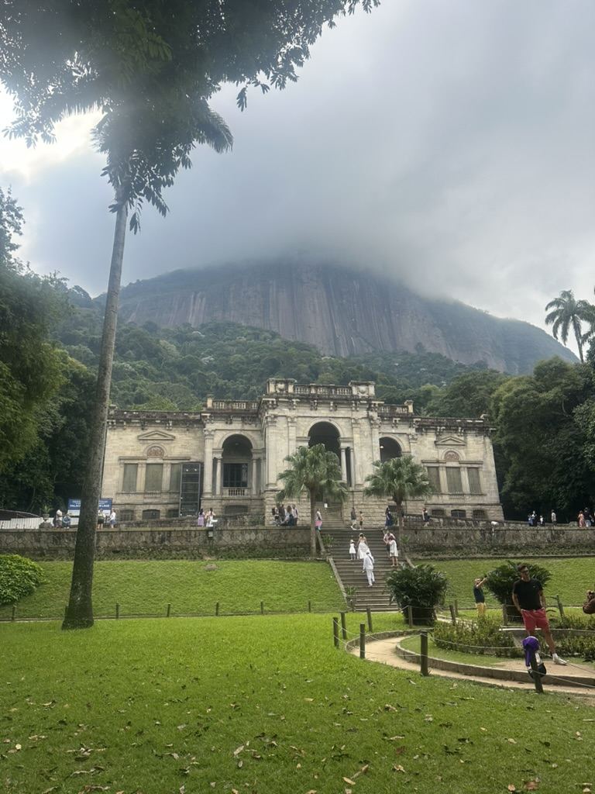
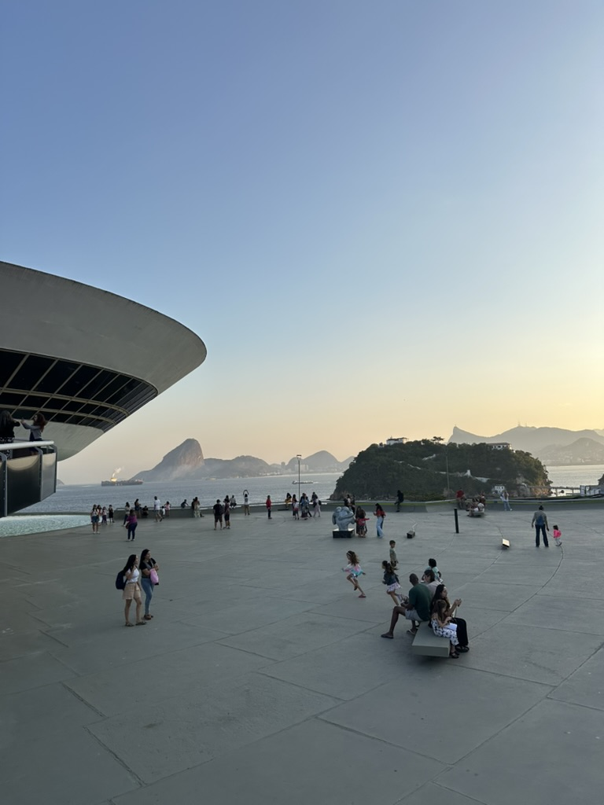
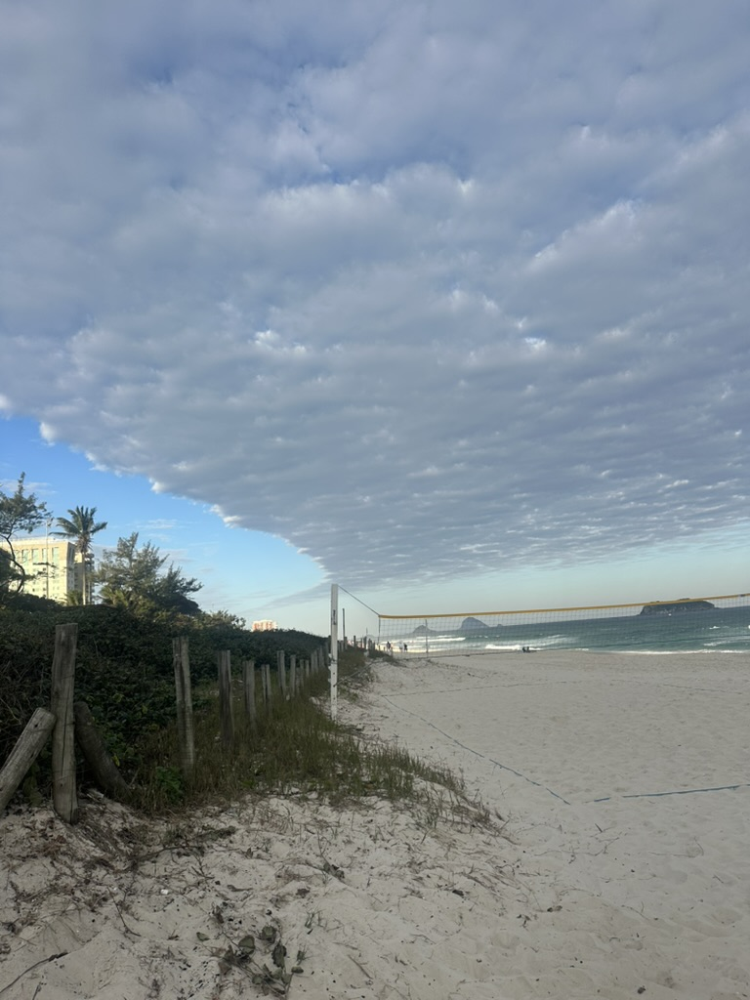
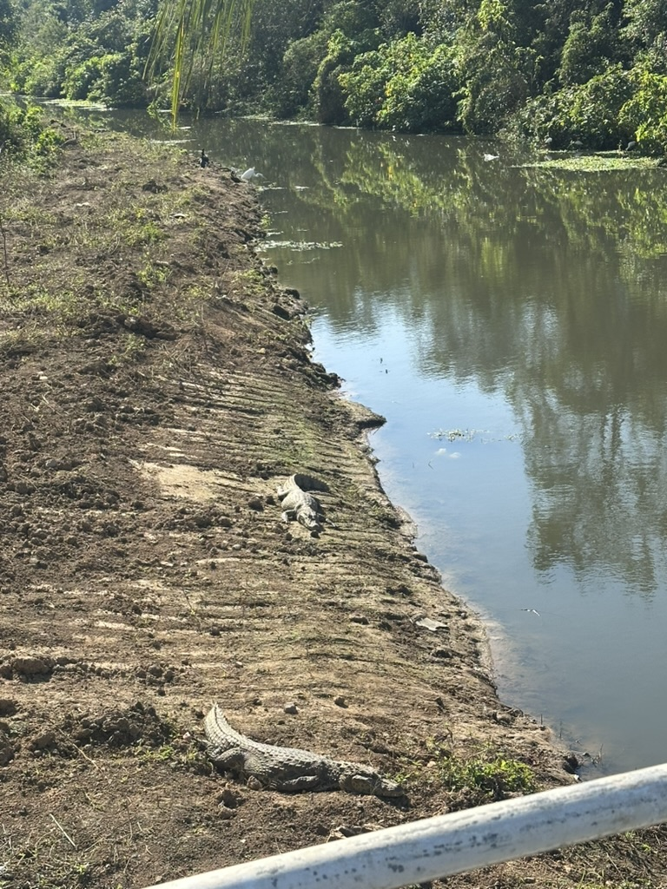
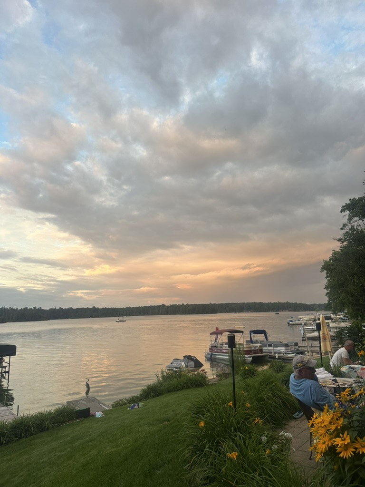

My Trip to Brazil and Michigan
A visual journey.
A Monkey at Christ the Redeemer

Sugarloaf Mountain

Copacabana Beach

Selarón Steps

Parque Lage

Niterói Contemporary Art Museum

Barra da Tijuca

Weekend in Florianópolis

Back to Rio
Final Stop: Clear Lake, Michigan

The End
Thanks for watching!